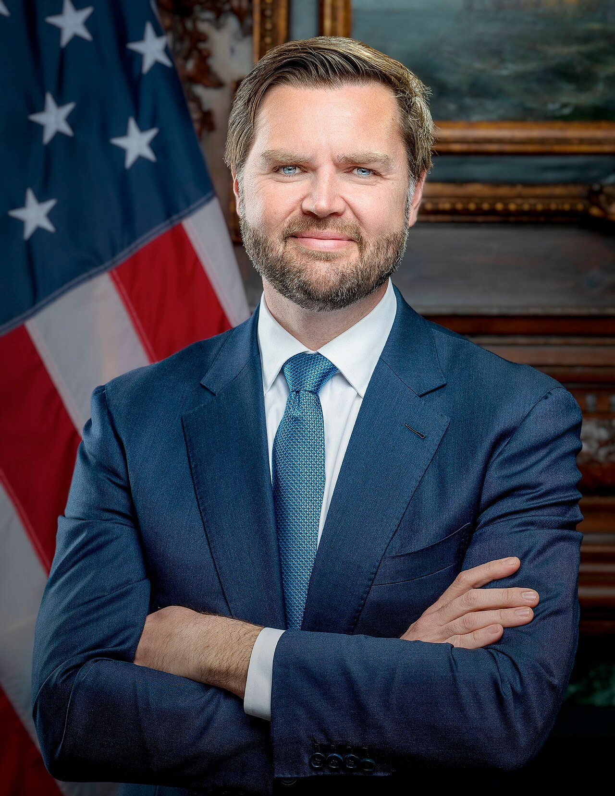
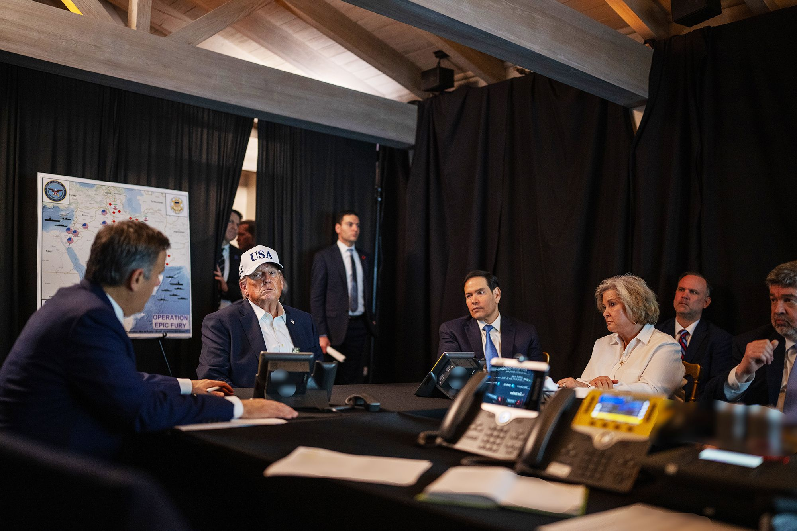
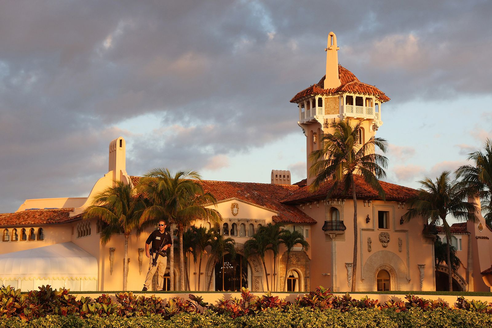
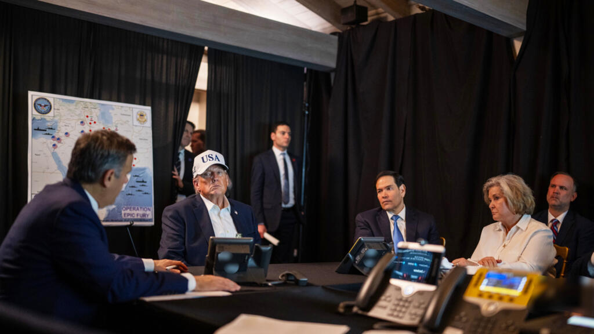
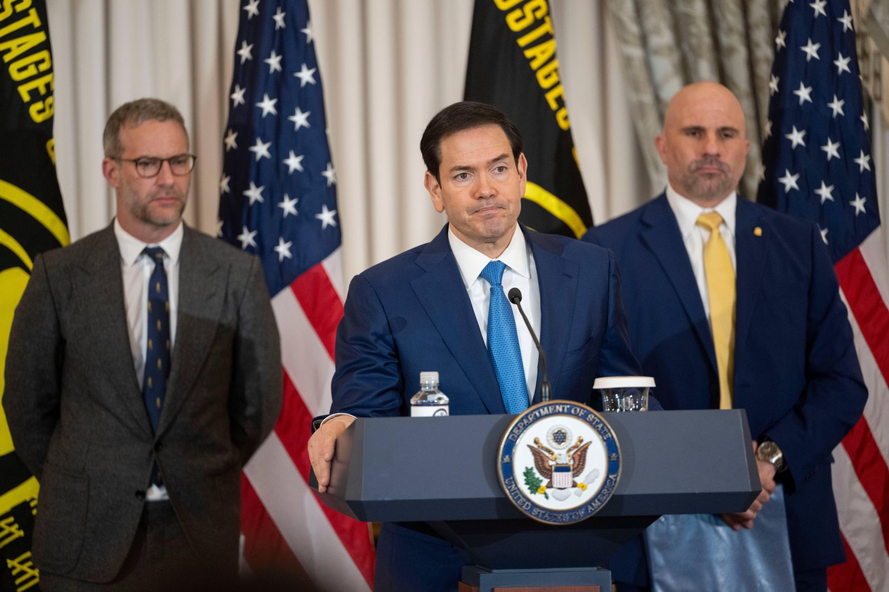

2026年2月28日，Mar-a-Lago。Trump 环顾左右，问出了那个在共和党精英圈层中流传数月的问题——"Marco or JD?" 答案正在改写 Vance 的命运。
2026年2月28日，就在"史诗之怒"空袭伊朗的行动启动的同一天，Florida州 Palm Beach 的 Mar-a-Lago 俱乐部灯火通明。约二十五名共和党最慷慨的大捐款人齐聚于此，他们为与 Trump 共进晚餐支付了数十万美元。
席间的气氛复杂而微妙。中东的天空正燃烧着导弹的火光，但这些捐款人更关心的是另一个战场：2028。
Trump 环顾左右，问出了那个已经在共和党精英圈层中流传数月的问题。
"Marco or JD?"
（「Marco 还是 JD？」）

在场者的反应几乎是一边倒的。一位长期跟踪共和党筹款的观察者后来向媒体透露了一个令人震惊的数字：在大捐款人群体中，支持比例约为 80 比 20，倾向于 Marco Rubio。[注1]
这二十五个人不能决定初选的结果。但他们代表着一种趋势——一种正在从捐款人的晚宴桌向外蔓延的趋势。
而这个趋势，正在改写 JD Vance 的命运。
要理解 Vance 面临的挑战，必须先看一个简单的数字序列。
2025年6月，Rasmussen Reports 的民调显示 Vance 的好感度首次转正：52% 好感，43% 不好感，净 +9。[注2] 这对一个在就任时被 Washington 月刊称为"民调史上最不受欢迎的新任副总统"的人来说，是一次了不起的逆转。参选后的急跌、竞选期间的负面标签、"无孩猫女"的余波——他似乎正在逐一克服。
八个月后，2026年1月，Rasmussen 再次测量：44% 好感，51% 不好感，净 -7。[注2] 四个月内，净好感度暴跌 16 个百分点。
这不仅仅是一个数字的变化——这是 Vance 整个政治叙事在现实面前的碰撞测试。
让我们看看其他机构在同一时期的数据。Pew Research Center，这个拥有全美最大样本量之一的机构（n=8,512），给出的数字更加严厉：38% 好感，52% 不好感，净 -14。[注3] YouGov 的结果也指向同一个方向：36% 好感，52% 不好感，净 -16。[注4]
但到了 2026 年 3 月，The Hill/DDHQ 基于 180 份民调的综合数据却给出了一个截然不同的图景：45.3% 好感，44.7% 不好感，净 +0.6。[注5]
RCP 综合平均是 41.3% 好感，50.5% 不好感，净 -9.2。[注6]
同一个人，同一时期，净好感度从 -16 到 +0.6——这个 17 个百分点的跨度说明的不是"谁的数据更准确"，而是说明 Vance 的政治形象已经分裂为两个完全不同的版本。在 DDHQ 的"可能投票者"模型中，他勉强维持正向；在 Pew 和 YouGov 的"全体成年人"模型中，他是一个净 -14 到 -16 的负资产。这意味着：越接近实际投票行为的人群对他越友好，而更广泛的社会公众对他的评价越来越差。
这个分裂本身就是一个重要信号。它暗示 Vance 正在变成一个典型的"基地候选人"——共和党选民仍然支持他（Napolitan 的数据显示 85% 的共和党人对 Vance 持好感[注7]），但独立选民和温和派的流失速度正在加快。Center Square 的追踪数据印证了这一点：2025年10月到2026年3月，Vance 在倾向共和党的独立选民中支持率从 41% 跌至 33%，暴跌 8 个百分点。[注8]
更令人不安的是那个他本应占据绝对优势的群体。Third Way 和 HIT Strategies 在 2025 年 12 月对 18-29 岁年轻男性的调查发现，Vance 在这个群体中的支持率仅为 26%，而反对率高达 55%。[注9] 在 2024 年大选中，Trump 在同一年龄段的男性中赢得了 58% 的支持。从 58% 到 26%——这不是自然衰减，这是断崖式坠落。而这个群体正是 Vance 在《乡下人的悲歌》中声称最能理解的人。
Johnathan V. Last 在第六章被引用的那段判断在这里有了更深层的回响："Vance 的权力基础不是共和党选民，而是共和党精英。他花了一整个成年时代在讨好更有权力的庇护者——从 Amy Chua 到 David Frum 到 Peter Thiel 到 Tucker Carlson，最后到 Trump 的孩子们。他选择了在内部运作，而不是让自己在选民中变得受欢迎。"[注10]
当一个政治人物的权力根基在精英阶层而非选民中时，民调数字的恶化就不只是一个公关问题——它是一个结构性的脆弱。
Marco Rubio 和 JD Vance 之间的对比，不是两个候选人的对比——是两条完全不同的政治路线的对比。而理解这两条路线，需要回到 2016 年。
那一年的 Miami 共和党初选辩论上，Trump 送给 Rubio 一个后来成为政治流行语的绰号："Lil' Marco"。他嘲笑 Rubio 的身高、嘲笑他的出汗、嘲笑他的紧张。"他像一只出汗的小狗，"Trump 说。在 Florida 州的初选中，Trump 以 45.7% 对 26.7% 击溃了 Rubio——在这个 Rubio 代表的州。
任何正常政治家的职业生涯都会在那一刻受到不可逆转的损伤。2016 年之后，Rubio 确实经历了一段低谷——他重新竞选参议员时犹豫不决，一度说"我没有兴趣再次竞选任何东西"，然后在最后时刻回心转意。这看起来像是一个政治人物的挣扎，甚至是衰败的前奏。
但 Rubio 做了一件 Vance 从未做过的事：他没有彻底改变自己。
从 2016 到 2026，Rubio 的政治路线是一条直线。他在参议院外交关系委员会深耕外交政策，建立了对拉丁美洲事务的深厚专长。他在 2024 年 Trump 遭遇暗杀未遂后公开支持，但没有像 Vance 那样从反 Trump 急转为亲 Trump——他只是从竞争者变成了合作者。他接受国务卿提名时，不需要解释自己过去的立场，因为他过去的立场虽然与 Trump 不同，但从未发展到人身攻击的程度。
这就是 Rubio 和 Vance 之间最本质的区别。Vance 的每一次转身都涉及身份的彻底重构——从铁锈带受害者到耶鲁精英，从"Trump 是美国的希特勒"到"Trump 最忠诚的副总统"，从反干预主义者到战争辩护者。每一次转身都获得了短期收益，但也累积了长期的可信度赤字。
Rubio 的路线更慢、更枯燥、更不可逆转——但它建立了一种 Vance 所缺乏的东西：可预期性。
在预测市场上，可预期性是有价格的。
2026年2月28日伊朗战争爆发后，Kalshi 上的共和党提名合约出现了剧烈波动。Vance 的获提名概率从 44% 跌至 38%，而 Rubio 从约 20% 跳升至 32%。[注11] 在大选概率上，Rubio 以 19% 对 Vance 的 18%，首次反超。[注12] Polymarket 的格局略有不同——Vance 仍然以 38.5% 对 26% 领先 Rubio[注11]——但两个平台都指向同一个趋势：资金正在从 Vance 流向 Rubio。
r/PredictionsMarkets 上的分析帖在战争爆发后的 24 小时内获得了 75 分和 124 条评论，标题简洁地概括了市场的判断："预测市场24小时内出现大幅变化，资金从 Vance 流出。"[注13] 这个变化的速度和方向揭示了预测市场参与者对 Vance 的核心担忧：不是他的能力，而是他的可预期性。在一场战争中，市场更信任那个立场始终一致的鹰派（Rubio），而不是那个立场来回切换的人（Vance）。
2026年3月16日，ABC News 报道了一个在共和党建制内部酝酿已久的运动：一群大捐款人正在私下推动"Draft Rubio"（征召 Rubio）运动，试图说服这位此前多次表示不会挑战 Vance 的国务卿改变主意。[注14]
这则报道之所以重要，不只是因为它揭示了一个具体的政治操作——而是因为它揭示了 Vance 政治叙事中的一个根本性矛盾。


这张照片本身就是 Draft Rubio 运动的最佳广告。Trump 在做出本世纪最重要的军事决策时，身边坐的不是 Vance，而是 Rubio。照片中的 Vance 甚至不在 Washington 的战情室——他在另一个房间的"二楼"。
在前四章中，我们详细追踪了 Vance 如何被硅谷"制造"出来。Peter Thiel 提供了最初的资金和意识形态框架，David Sacks 和 Marc Andreessen 提供了社交网络和政治通道，Joe Lonsdale 提供了筹款平台。Vance 在硅谷的庇护者网络不是他成功的唯一因素，但它是他从一个无名退伍军人变成参议员再到副总统的核心加速器。
但硅谷的捐款人有自己的偏好——他们的偏好不总是与 Vance 的政治需求一致。当他们开始把钱转向 Rubio 时，Vance 就面临着一个他在铁锈带成长过程中从未遇到过的困境：他的"产品经理"们在考虑替换他。
"Trump 已经在为 2028 做准备。他正在没有点名的情况下建立接班人。"
Glenn Beck 在 Twitter 上的一条推文（16,847 likes）敏锐地捕捉到了这个动态："Trump 已经在为 2028 做准备。他正在没有点名的情况下建立接班人。"[注15] @MichaelARothman 的推文（9,679 likes）呼应了这个判断："Trump 正在为 2028 布局，只是还没公开宣布。Vance 和 Rubio 都在被观察中。"[注16]
但捐款人和投票人是两个不同的物种。一位资深共和党操盘手对 ABC News 的话值得完整引用：
"捐款人不挑选提名人——基层挑选。捐款人曾试图抛弃 Trump 支持 DeSantis，我们都知道结果如何。"
这句话既是对 Rubio 的警告，也是对 Vance 的提醒。DeSantis 的教训在共和党精英中记忆犹新：2023年初，Florida 州长在捐款人群体中以压倒性优势领先 Trump，媒体称其为"Trump 杀手"，Silicon Valley 的捐款人排队向他捐款。然后初选开始了，Trump 以历史性的优势碾压了他。
Vance 目前在初选民调中的位置比 DeSantis 曾经的位置更稳固——Emerson 52%[注17]，J.L. Partners 53%[注18]——但伊朗战争和好感度滑坡正在侵蚀这种稳固。Center Square 3月的民调显示 Vance 的支持率从 38% 降至 36%[注8]，虽然降幅不大，但方向令人担忧。
如果要理解 Vance 的真实处境，最有效的方式不是看民调数字，而是同时打开 Twitter 和 Reddit。
这是两个关于同一个政治人物的完全不同的故事。
在 Twitter 上——更准确地说，在 MAGA 主导的 Twitter 生态中——Vance 的 2028 前景看起来一片光明。@EricLDaugh 的推文（28,643 likes）庆祝民调显示 Vance 以 53%-14% 领先 Rubio 39 个百分点。[注19] @GuntherEagleman（12,399 likes）欢呼"Vance 确认 2028 竞逐总统"。[注20] @ClownWorld（5,913 likes）断言"系好安全带，JD Vance 2028 将成为你们的总统"。[注21]
这些推文的总互动量超过百万次。如果只看 Twitter，你会认为 Vance 的 2028 提名几乎是板上钉钉的事。
然后打开 Reddit。
r/MurderedByWords 上一个帖子以 49,464 分——这个 subreddit 上的历史最高分——将 Vance 的反战引语和战争支持并列放置，标题只有五个字："He learned it from his boss too!"[注22] r/WikipediaVandalism 上，Vance 的 Wikipedia 页面被篡改为"太监 JD Vance"（Eunuch JD Vance），获得 3,418 分和 67 条评论。[注23] r/politics 上，一个帖子庆祝 AOC 首次在 2028 对决民调中领先 Vance，获得 1,217 分。[注24] r/thomastheplankengine 上一个帖子获得了 1,170 分，内容是"梦见选票上加了'随机'选项，宾州某人直接当选总统"——不是支持某个对手，而是对整个政治体系的厌倦。[注25]
我们的跨平台分析揭示了四个议题中 Twitter 和 Reddit 情绪分布的全貌：在 2028 前景议题上，Twitter 支持与反对的比例是 9:2；Reddit 是 1:1，但中性的 subreddit 分布（politics、goodnews、InterstellarKinetics）背后暗含负面倾向。[注26] 在伊朗战争议题上，Twitter 的比例倒转为 1:8——即使是 MAGA 生态也对 Vance 的立场切换表达了不满。[注26]
两个平台之间的鸿沟不只是一个"信息差"——它是 Vance 政治身份的裂痕在公众层面的投射。在 MAGA 内部，他是 Trump 的继承者；在外部世界里，他是一个立场反复的政治投机者。这两幅肖像都是真实的——但它们不可能同时赢得大选。
Vance 的党内对手不是一群等量齐观的人——他们代表的是共和党联盟内部的不同焦虑。
我们已经详细讨论了 Rubio 的路线。但有一个数据点值得单独强调：在 2026 年 3 月，Rubio 在 Kalshi 的大选概率上以 19% 领先 Vance 的 18%——这是在 Vance 以 48.8% 领先 Rubio 的 9.3% 的 RCP 初选民调背景下发生的。[注6][注12]
初选民调和大选概率之间的这种倒挂，是预测市场在发出一个清晰的信号：共和党提名不等于大选胜利。市场认为 Rubio 是比 Vance 更强的大选候选人，即使他在初选中大幅落后。这个判断与一条深刻的历史规律一致——共和党提名中极端的候选人往往在大选中表现更差。
Rubio 也有致命弱点。他主导的伊朗战争极度不受欢迎——54% 的选民不认可 Trump 的处理方式，仅 29% 支持打击行动。[注27] 作为战争的公开面孔，Rubio 与这场不受欢迎的战争绑定在一起。他在表态中暗示"以色列迫使 Trump 行动"后不得不紧急澄清[注1]，这暴露了他在外交领域的政治不成熟。
而且，Trump 内部消息源的一句话精准地概括了 Rubio 的困境："这是 Marco 最不该冒头的时候。"[注1] 在 Trump 仍然控制共和党的时代，任何被视为"取代" Trump 的动作都带有巨大的风险。
Donald Trump Jr. 在 RCP 平均中以 11.0% 位居第二，但他的政治地位比这个数字暗示的要复杂得多。[注6]
Trump Jr. 的优势可以用一个词概括：品牌。他的姓氏就是共和党最强大的政治品牌。他继承了父亲的社交媒体影响力、小捐款人数据库、和 MAGA 基本盘的情感忠诚。如果他在 2028 年参选，他会立刻获得一个其他候选人都需要数年才能建立的东西：可识别度。
但他的弱点也同样突出。他从未担任过任何公职。他公开说"ZERO interest"但又拒绝完全排除。[注28] 在城市选民中他以 32% 领先 Vance 的 28%[注8]，但在共和党核心选民中不如 Vance。
@JustinWStapley 在 Twitter 上的一条推文（5,798 likes）用了一个尖锐的框架来形容 Vance 的整体处境："Vance 越来越成为一个'没有选民的候选人'——缺乏独立于 Trump 的政治基础。"[注29] 如果 Trump Jr. 参选，这个判断对 Vance 的伤害将加倍——因为 Trump Jr. 代表的是同一种政治品牌，只是更纯正、更有市场号召力。
Ron DeSantis 的故事在 2026 年更像是一篇倒叙。The Hill 用一个双关语概括了他的现状："DeMinished"——既是指他的名字 DeSantis，也是指他的衰退。[注30]
"Alligator Alcatraz"——他在 Florida 建造的大规模移民拘留设施——每天花费 120 万美元，总成本超过 10 亿美元，联邦补偿迟迟不到位。共和党众议院一致通过了阻止新资金的法案。[注31] 2024 年竞选总统败给 Trump 的阴影挥之不去。博彩赔率仅 3%。RCP 平均 9.0%。[注6]
DeSantis 的教训对所有 Vance 的对手都有启示意义：在 Trump 的共和党里，"反 Trump"或者"取代 Trump"的叙事从来都不是制胜之道。DeSantis 在 2024 年试图做的是"更好的 Trump"——但选民选择了原版。
Nikki Haley 的 2028 前景可以用两个标题概括。National Review 的判断："Nikki Haley 2028 Is Not Happening."[注32] The Hill 的判断："GOP party won't want Nikki Haley in 2028."[注33]
2024 年拒绝迅速支持 Trump 的决定在 MAGA 基本盘中留下了不可愈合的伤疤。RCP 4.5% 的支持率[注6] 不是低——是零。
至于 Tom Cotton、Josh Hawley、Ted Cruz、Vivek Ramaswamy——他们在特定的选民群体中有存在感，但没有一个具备在 2028 年挑战 Vance 或 Rubio 的规模和势头。Ramaswamy 正在全力投入 2026 年 Ohio 州长竞选[注34]；Byron Donalds 在 Trump 背书下竞选佛州州长，筹款超 4000 万美元[注35]；Ted Cruz 在 2028 年面临自己的连任挑战。[注6]
共和党 2028 的竞争，是 Vance vs Rubio 的双人赛——其他人只是背景板。
如果 Vance 赢得提名，他将面对一个在结构上占据优势的对手。
2028 年是"开放席位"大选——没有在任总统竞选连任。现代美国政治中，执政党在开放席位选举中的表现通常不理想。加上在野党的天然动员优势，民主党在 2028 年的起点并不差。
Nate Silver 的估计更加直接：即使民主党提名一个"suboptimal"的候选人，也有大约 50% 的获胜概率。[注36]
Gavin Newsom 在几乎所有民主党初选分析中排名第一。Nate Silver 排名第一[注37]，The Hill 排名第一[注38]，POLITICO 明确称其为 "2028 Front-runner"（2028领跑者）。[注39]
Newsom 的核心优势是筹款能力——California 顶级网络，超 10 万新捐款人。他在 2025 年后转向激进反 Trump 立场，模仿 Trump 的社交媒体风格进行反击，展现出一种"hard-headed pragmatist"（头脑清醒的实用主义者）的气质，被比作 Bill Clinton。[注39]
但"California derangement syndrome"（California 偏执综合征）是真实存在的。外州选民对 California 政客的固有偏见——高税收、 homelessness、进步主义过火——是 Newsom 在摇摆州必须克服的巨大障碍。Nate Silver 自己都承认："我认为 Newsom 和 Harris 这样的过去失败民主党候选人是同一类人。"[注37]
在假设对决中，Newsom 对 Vance 的表现经历了显著改善：2025年7月 Emerson 民调显示 Vance 领先 45%-42%[注40]；到2025年11月 Overton 民调，Newsom 以 3-4 点反超。[注41]
Josh Shapiro 代表的是民主党中一种不同的叙事：不是谁的意识形态最纯正，而是谁能在摇摆州赢。
Quinnipiac 在宾州选民的假设对决中给出了一个令人震惊的数字：Shapiro 领先 Vance 10 个百分点。[注42] 如果这个优势在 2028 年保持，宾州——这个决定 2024 年大选结果的关键州——可能会翻蓝。
Shapiro 的工作满意度（60%）远超 Trump（43%）。[注43] 他的执法背景（前宾州总检察长）提供了法律与秩序议题上的信誉。但他的全国知名度偏低，2026 年州长连任才是首要任务。
Alexandria Ocasio-Cortez 在某种程度上是民主党的 Vance——年轻、充满活力、代表着党内的意识形态变革力量，同时也被中间选民视为极端。
Yale Youth Poll 显示 AOC 在年轻选民中以两位数优势领先。[注44] New Republic 的调查显示 85% 的民主党人对她持正面看法——在 12 位受访政客中最高。[注45] 她出席 Munich 安全会议，行为举止像总统候选人。Bluesky 民调显示 AOC vs Rubio 41-39、AOC vs Vance 43-40——进步派为之一振。[注46]
但"socialist"这个标签在摇摆州是毒药。39 岁的女性有色人种身份可能在某些州构成挑战。她可能重蹈 Sanders 2020 年的覆辙——在年轻人和高学历选民中表现优异，但在关键的温和派和老年选民中失利。
Pete Buttigieg 的存在感可能不如 Newsom 或 AOC，但他在 New Hampshire 州初选中领先（19%[注47]），在假设对决中以 43%-44% 落后 Vance 仅 1 个百分点[注40]——这是所有民主党候选人中最小的差距。
哈佛、牛津、哈佛肯尼迪学院、退伍军人、来自摇摆州中西部——Buttigieg 的履历几乎是为对抗 Vance 定制的。Vance 代表的是工人阶级叙事；Buttigieg 代表的是精英能力叙事。在一个经济不确定性高涨的时代，这两种叙事都有市场。
在给出最终判断之前，让我们做一件调查记者应该做的事：把前六章积累的所有矛盾摊开在桌面上。
这六个矛盾不是独立的——它们是同一条线索在不同节点上的表现。这条线索的起点是第一章的那个铁锈带男孩，终点是一个被他自己帮助制造的叙事困住的政治产品。
在所有来自 MAGA 内部的声音中，有一个声音特别值得注意——不是因为它的温和，而是因为它的残酷。
Laura Loomer，极右翼活动家，在 Trump 的核心圈层中有耳目影响力。在伊朗战争之后，她在社交媒体上发出了一条直指 Vance 政治命脉的最后通牒：

"If he doesn't disavow [Tucker], Marco's going to be the nominee."
（「如果他不跟 [Tucker] 划清界限，Marco 就会成为提名人。」）
这句话的残酷性不在于它的威胁——而在于它的逻辑。Loomer 不是在说 Rubio 比 Vance 更好。她在说：在 MAGA 的生态系统中，忠诚比能力重要，站队比判断重要。Vance 的意识形态盟友（Rogan、Carlson、Sacks）站在战争的对立面，而站在战争一方的人（Loomer、Rubio、Trump）代表的是另一套逻辑。
Vance 被夹在两套逻辑之间，任何选择都是错的。
r/Conservative 上一个帖子（913 分）记录了 Rubio 曾经做出的一个公开承诺："排除在 Vance 寻求提名的情况下参加 2028 竞选"——一个"loyalty pledge"（忠诚誓言）。[注54] 但在伊朗战争改变了整个权力格局之后，这个承诺看起来越来越像是一张可以选择不兑现的支票。
@CryptidPolitics 的一条推文（1,971 likes）在 2026年3月20日带来了最具戏剧性的消息："Vance 据报道正在考虑不参加 2028 总统竞选。伊朗战争和 Rubio 的崛起可能是关键因素。"[注55] 这个消息的真实性尚未得到确认，但它的传播本身说明了一个事实：在 Vance 的支持者群体中，"退出"已经从不可想象变成了可以讨论。
现在，是时候给出一个记者应该给出的最终判断了。
JD Vance 的 2028 前景是什么？
初选层面：他仍然是领跑者。Emerson 52%[注17]、J.L. Partners 53%[注18]、RCP 48.8%[注6]——这些数字在任何正常的初选周期中都意味着几乎不可撼动的领先优势。没有在任总统背书的挑战者击败一个在任副总统的先例极其罕见。如果 Trump 在 2028 年之前给予 Vance 明确的正式背书，初选的结果几乎没有悬念。
但 "如果" 这两个词承载了太多重量。
Trump "can't stop asking" 谁更适合。[注56] 他在 Mar-a-Lago 的晚宴上问捐款人。他在公开场合提到 "Vance or Marco"。[注1] White House 发言人 Steven Cheung 不得不否认："任何关于 VP Vance 和国务卿 Rubio 之间分歧的疯狂媒体猜测都不会阻止本届行政当局的使命。"[注57] 当白宫需要否认两个最高级别官员之间存在分歧时，分歧本身的存在已经不再是秘密。
如果 Trump 不给予 Vance 明确背书——或者更糟糕，如果 Trump 转向 Rubio——那么 Vance 的初选领先优势将迅速蒸发。因为他的领先优势建立在 Trump 的影子之上，而不是自己的选民基础之上。
大选层面：Vance 的大选前景比他的初选前景暗淡得多。
所有假设对决都非常接近——Vance 对 Buttigieg 44%-43%，对 AOC 44%-41%，对 Newsom 45%-42%[注40]——但"接近"不等于"领先"。大约 87% 的选民已确定党派偏好[注58]，这意味着 13% 的未决定选民将决定大选结果。在这些未决定选民中，Vance 的好感度（净 -9.2 到 -14[注6][注3]）是一个沉重的负担。
年轻男性支持率 26%（Trump 2024 年 58%[注9]）。伊朗战争即使结束，其政治遗产——油价、伤亡、地区不稳定——将持续到大选年。Vance 在这场战争中的角色——从反对者变成辩护者——将被民主党对手反复使用。
Shapiro 在宾州领先 10 个百分点[注42]。如果宾州翻蓝，共和党的选举人票路径将变得极其狭窄。
结构性判断：Vance 最大的问题不是任何一个具体的政策立场或选举数据。他的最大问题是我们在这七章中反复看到的那条红线——他缺乏独立于庇护者网络的选民基础。
这个判断可以用一个简单的测试来验证：如果 Peter Thiel、David Sacks 和 Joe Lonsdale 同时撤回对 Vance 的支持，他的竞选还剩下什么？
答案是：Trump 的背书（如果存在的话）和《乡下人的悲歌》的品牌。
但《乡下人的悲歌》是一本 2016 年的书。在 2028 年的选举中，它的政治效用已经所剩无几。而 Trump 的背书——如果存在的话——是一把双刃剑：它能让 Vance 赢得初选，但也可能让他输掉大选。
让我们回到那个 Mar-a-Lago 的晚宴。
Trump 问完"Marco or JD?"之后，在场的捐款人几乎一边倒支持 Rubio。但投票的不是他们——投票的是 Ohio 的钢铁工人、Pennsylvania 州的农民、Michigan 州的汽车工人、Wisconsin 州的奶农。这些人是 Vance 在《乡下人的悲歌》中写过的、声称理解过的、但在过去两年中从未为他们赢得任何实质性政策胜利的人。
"Vance 作为一个响亮的 Trump 批评者进入公众视野，但他却能向沿海精英解释 Trump 在心脏地带美国人中的吸引力。重塑对一个曾经重塑过自己的人来说显然是可能的。但如果他寻求 2028 年共和党总统提名，他可能会发现自己被绑定在一系列 2024 年的 Vance 会反对的不受欢迎的政策上。"
这段话的最后一部分已经不再是一个假设。伊朗战争让它变成了现实。
J.D. Vance 的故事，从第一章的铁锈带创伤到第七章的王座之路，其弧线可以概括为一句话：一个被硅谷制造出来的政治产品，在最需要独立判断的时刻选择了服从，然后在服从之后发现被服从的对象并不需要他。
这是一个关于权力本质的故事。Vance 从 Amy Chua 到 Peter Thiel 到 Tucker Carlson 到 Trump 的庇护者链条上爬升，每一步都准确无误。但他从未停下来问一个问题：如果所有庇护者同时要求你做一件与你信念相悖的事，你该站在哪一边？
在伊朗战争中，他找到了这个问题的答案——他站在了庇护者一边。然后他发现自己被留在了战情室的二楼。
2028 年即将到来。
投票站即将开放。
而 Vance 站在投票站的门口，
手里握着的不是自己的入场券，
而是别人给他的。
（全篇完）